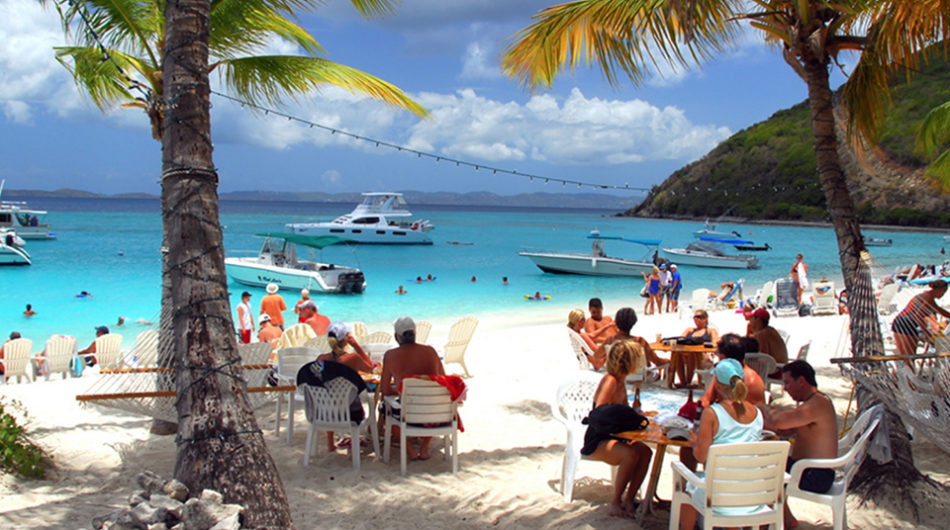
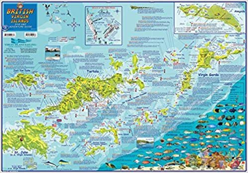
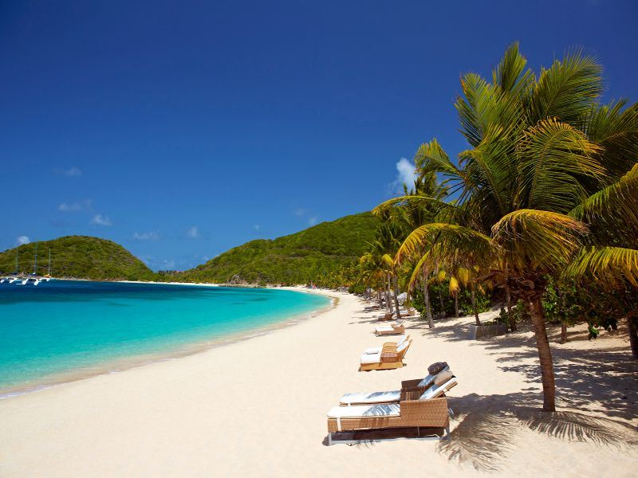
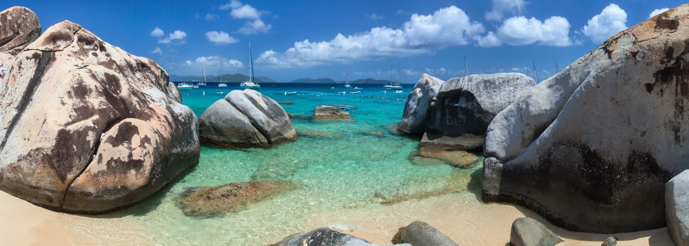
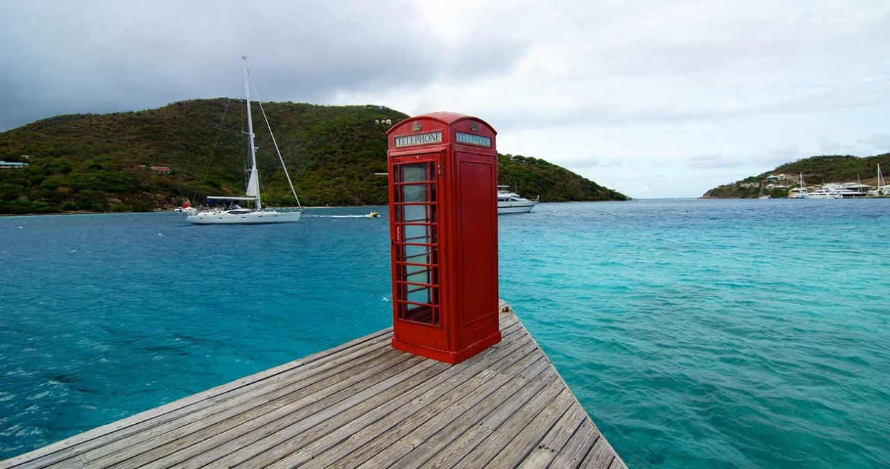
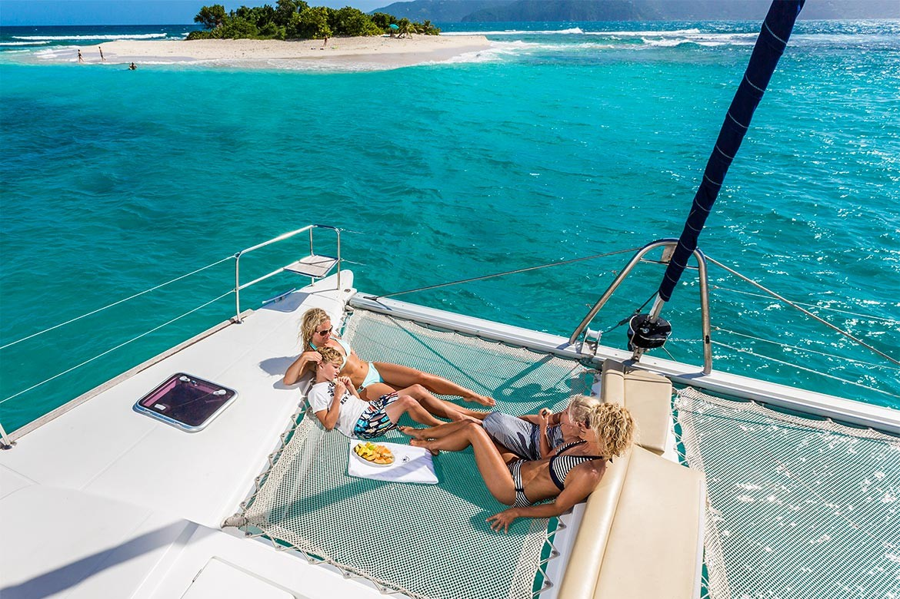

Tourism accounts for approximately 45% of national income. The islands are a popular destination for US citizens. In 2006 a total of 825,603 people visited the islands, of whom 443,987 were cruise ship passengers. Tourists frequent the numerous white sand beaches, visit The Baths on Virgin Gorda, snorkel the coral reefs near Anegada, or experience the well-known bars of Jost Van Dyke. The BVI are known as one of the world's greatest sailing destinations, and charter sailboats are a very popular way to visit less accessible islands. Every year since 1972 the BVI has hosted the Spring Regatta, which is a seven-day collection of sailing races throughout the islands. A substantial number of the tourists who visit the BVI are cruise ship passengers, and although they produce far lower revenue per head than charter boat tourists and hotel based tourists, they are nonetheless important to the substantial - and politically important - taxi driving community. Only Virgin Islanders are permitted to work as taxi drivers.
The British Virgin Islands have a tropical rainforest climate, moderated by trade winds. Temperatures vary little throughout the year. In the capital, Road Town, typical daily maxima are around 32 °C (89.6 °F) in the summer and 29 °C (84.2 °F) in the winter. Typical daily minima are around 24 °C (75.2 °F) in the summer and 21 °C (69.8 °F) in the winter. Rainfall averages about 1,150 mm (45.3 in) per year, higher in the hills and lower on the coast. Rainfall can be quite variable, but the wettest months on average are September to November and the driest months on average are February and March.
The British Virgin Islands
The territory operates as a parliamentary democracy. Ultimate executive authority in British Virgin Islands is vested in the Queen, and is exercised on her behalf by the Governor of the British Virgin Islands. The governor is appointed by the Queen on the advice of the British government. Defence and most foreign affairs remain the responsibility of the United Kingdom.
The most recent constitution was adopted in 2007 (the Virgin Islands Constitution Order, 2007)[25][26] and came into force when the Legislative Council was dissolved for the 2007 general election. The head of government under the constitution is the Premier (before the new constitution the office was referred to as Chief Minister), who is elected in a general election along with the other members of the ruling government as well as the members of the opposition. Elections are held roughly every four years. A cabinet is nominated by the Premier and appointed and chaired by the Governor. The Legislature consists of the Queen (represented by the Governor) and a unicameral House of Assembly made up of 13 elected members plus the Speaker and the Attorney General.
The "twin pillars" of the economy are tourism and financial services. Politically, tourism is the more important of the two, as it employs a greater number of people within the territory, and a larger proportion of the businesses in the tourist industry are locally owned, as are a number of the highly tourism-dependent sole traders (for example, taxi drivers and street vendors). Economically however, financial services associated with the territory's status as an offshore financial centre are by far the more important. 51.8% of the Government's revenue comes directly from licence fees for offshore companies, and considerable further sums are raised directly or indirectly from payroll taxes relating to salaries paid within the trust industry sector (which tend to be higher on average than those paid in the tourism sector).



The first European sighting of the Virgin Islands was by the Spanish expedition of Christopher Columbus in 1493 on his second voyage to the Americas. Columbus gave them the fanciful name Santa Ursula y las Once Mil Vírgenes (Saint Ursula and her 11,000 Virgins), shortened to Las Vírgenes (The Virgins), after the legend of Saint Ursula.
The Spanish Empire claimed the islands by discovery in the early 16th century, but never settled them, and subsequent years saw the English, Dutch, French, Spanish, and Danish all jostling for control of the region, which became a notorious haunt for pirates. There is no record of any native Amerindian population in the British Virgin Islands during this period, although most of the native population on nearby Saint Croix was killed or dispersed.
The British Virgin Islands comprise around 60 tropical Caribbean islands, ranging in size from the largest, Tortola, being 20 km (12 mi) long and 5 km (3 mi) wide, to tiny uninhabited islets, altogether about 150 square kilometres (58 square miles) in extent. They are located in the Virgin Islands archipelago, a few miles east of the US Virgin Islands, and about 95 km (59 mi) from the Puerto Rican mainland. About 150 km (93 mi) east south-east lies Anguilla. The North Atlantic Ocean lies to the east of the islands, and the Caribbean Sea lies to the west. Most of the islands are volcanic in origin and have a hilly, rugged terrain. Anegada is geologically distinct from the rest of the group and is a flat island composed of limestone and coral.
In addition to the four main islands of Tortola, Virgin Gorda, Anegada, and Jost Van Dyke, other islands include (see also Islands of the British Virgin Islands)